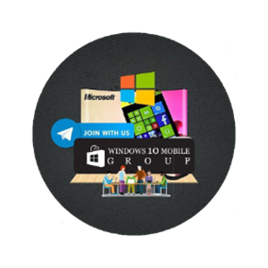

W10M Group
Bashar Astifan
Download
Description
The W10M Group App is the Repo for the W10M Group
It contains
- Guides (Step by step tutorials from Basics to System Unlocks and tweaks)
- Every kind of Apps (Categorized by the type)
- Games (Xbox & Non Xbox live games)
- Customization Tools and resources
- System Tweaking and power user tools
- PC tools for W10M
- Microsoft Band 1 & 2 section
- Nostalgia Content (Commercials & Manuals, OS wallpapers and system sounds etc)
What´s new
v3.8.2
- Direct MEGA file download (issue fixed)
- New option for auto reload cache
- Navigation between folders now faster
- Downloads page now has two sections (Group, Single)
- Indexing files now will be in the background so you don't have to wait for it each time
Requirements
- Operating System: Win10 (10.0.14393.0)
- Architecture: ARM, x86 , x64